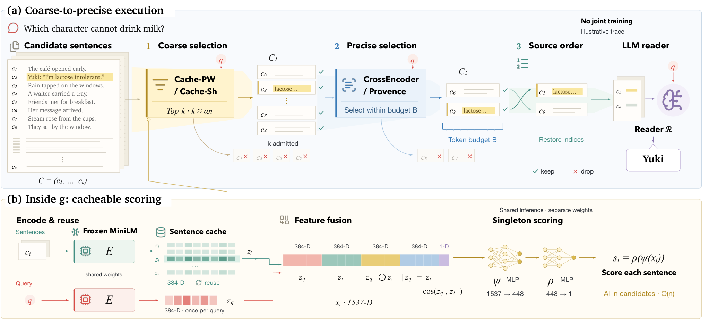
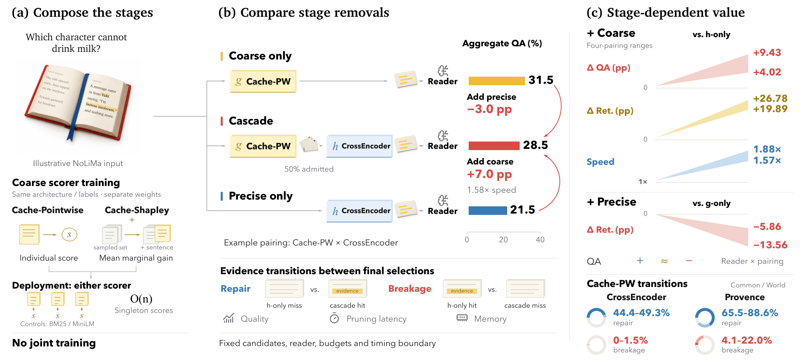
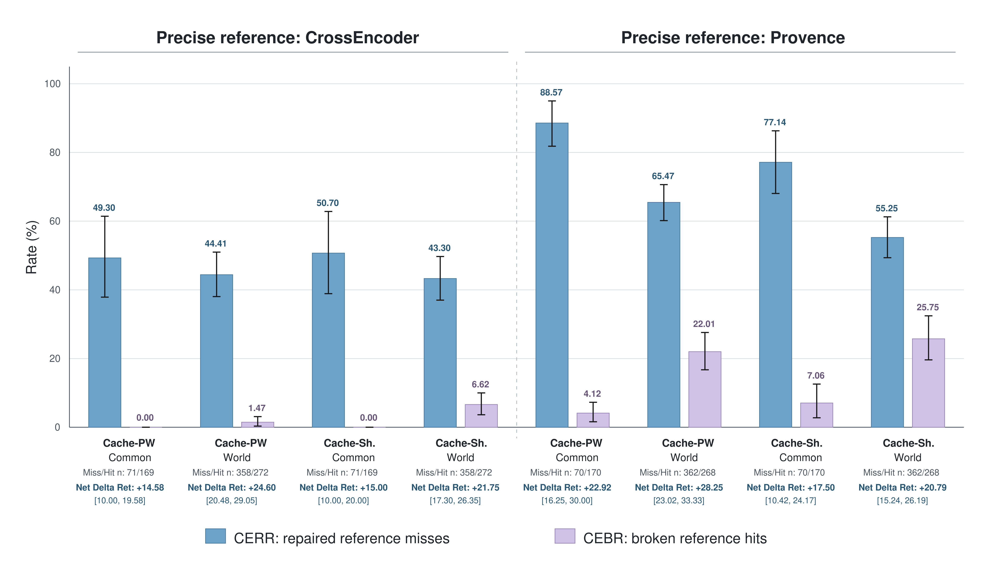
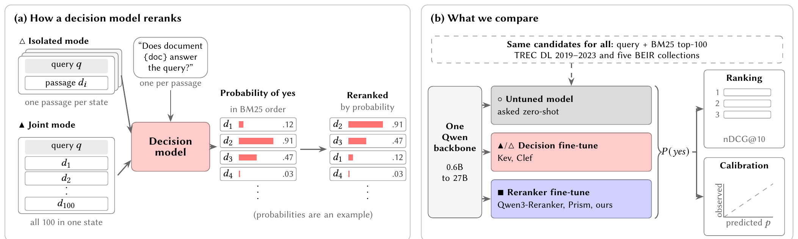
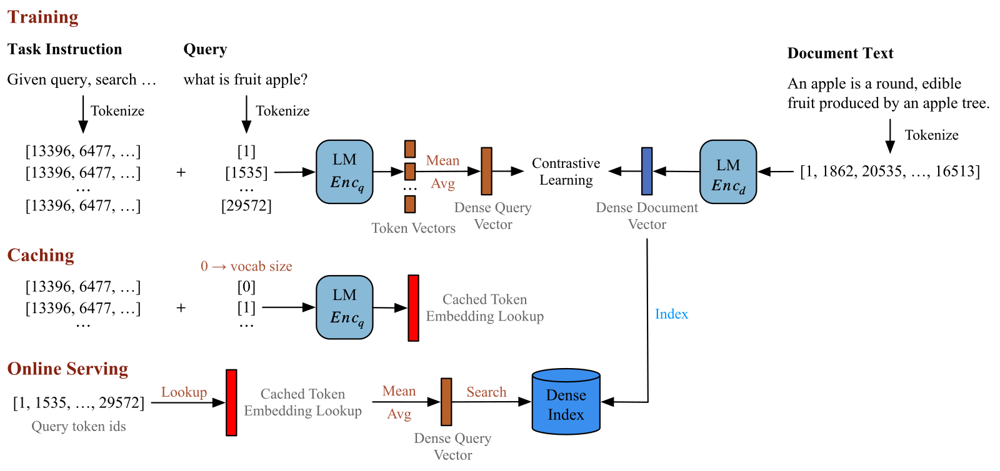
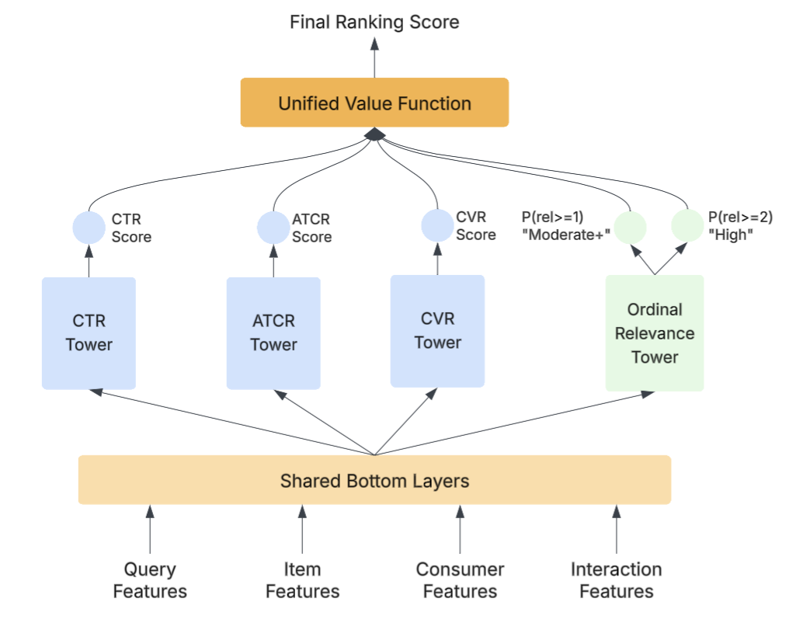

Contents · 6 sections
1A fine-ranker trimming 32K on its own is no better than stuffing in the whole text: can rerankers that were never trained together still cascade by handing off candidates?2The coarse filter narrows the pool; the fine-ranker picks under the budget3Walking through what each stage keeps from the same evidence4A cascade can beat the fine-ranker alone, yet may lose to the coarse filter5Swap the reader or dataset, and whether to keep the later stage is not fixed6LimitationsSHARE
A fine-ranker trimming 32K on its own is no better than stuffing in the whole text: can rerankers that were never trained together still cascade by handing off candidates?
A typical multi-stage retrieval pipeline recalls a wide pool of candidates, then hands them to a fine-ranker like a CrossEncoder that concatenates the query and the sentence to score them, trims the context to a token budget, and passes the result to a reader model. Widening the pool lowers the chance of missing the right evidence, at the cost of dumping more irrelevant sentences on the fine-ranker.
Letting the fine-ranker handle this stage alone does not necessarily beat feeding the entire text straight to the reader. Yanqiao Chen, Dongsheng Hou, and Yuhan Rui at Southern University of Science and Technology tested this on NoLiMa, a benchmark that strips out lexical overlap between questions and evidence, buries the evidence inside 32K-token novel-length documents, and checks whether a selector can recover the right sentences on semantics alone. With Gemma 3 12B answering under a uniform 30% token budget, CrossEncoder gets 21.49% accuracy. On those same 870 samples, feeding the full 32K text straight to the model scores 22.18%. Provence, another fine-ranker that scores context sentences conditioned on the query before pruning, reaches only 22.30%.
Meanwhile, Cache-Pointwise—a cached coarse filter trained completely decoupled from downstream stages—hits 31.49% accuracy on its own under the same 30% token budget. The authors are not asking whether to train a stronger fine-ranker. They are asking whether rerankers with different scoring mechanisms can be chained into a cascade without joint training, passing only candidate sets between stages—and once chained, whether each stage is actually helping or discarding evidence the previous stage already found.
In the measured results, putting Cache-Pointwise in front of CrossEncoder lifts accuracy from 21.49% to 28.51% and speeds up online pruning by 1.58×. Putting it in front of Provence adds 9.43 percentage points at 1.86× the speed. A separately trained coarse filter can indeed make a fixed fine-ranker both faster and more accurate.
Compare the same cascade against the coarse filter alone, though, and evidence retention drops across every pairing. With CrossEncoder downstream, accuracy falls by 2.99 percentage points—at 28.51%, the cascade still trails the coarse filter's standalone 31.49%.
A coarse filter trained without joint training can improve both the accuracy and the speed of a fixed fine-ranker; but the same cascade often beats the fine-ranker alone while losing to the coarse filter alone. All comparisons are run under a fixed budget by removing one stage. Swap the reader, the knowledge type, or the number of cascade stages, and whether the later stage is worth keeping is not a fixed answer.
The coarse filter narrows the pool; the fine-ranker picks under the budget
The cascade itself is a plain two-stage handoff with frozen parameters. Coarse filter g takes the top k sentences from the full candidate set C, where k is roughly a fraction α of the original sentence count. From that admitted set, fine-ranker h selects the final context under budget B, and the kept sentences are restored to original order before going to the reader:
C₁ = Top_k(C; g), C₂ = BudgetTop_B(C₁; h)
In the main experiments, α=50% and NoLiMa's budget B is 30% token. Cache-Pointwise and Cache-Shapley are trained separately and plugged straight in. Downstream CrossEncoder and Provence weights stay frozen, and coarse training never sees downstream scores, reader feedback, or cross-stage gradients.
Both coarse filters share the same frozen MiniLM-L6-v2 encoder and the same scorer. Corpus sentences are pre-encoded into 384-dimensional vectors and cached, so an incoming query is encoded only once at serving time. Each query–sentence pair forms a 1,537-dimensional feature
x_i = [z_q; z_i; z_q ⊙ z_i; |z_q − z_i|; cos(z_q, z_i)]
that feeds into a small Deep Sets network. Together the two networks have 3,394,497 trainable parameters, with the encoder left frozen. At deployment, both use a pointwise readout r_i = v_θ({c_i}), scanning n candidates in linear time. They differ only in the training signal: Cache-Pointwise optimizes a pairwise margin loss directly on pointwise scores, while Cache-Shapley treats the candidate set as a cooperative game during training, supervises on Shapley marginal contributions estimated from 10 permutation samples, and still runs pointwise scoring at deployment. Training labels come from MS MARCO v2.1 passage selection records, with no further fine-tuning on the target benchmarks. Hoot says

Cache-Pointwise
- what training looks at
- pointwise scores, used directly in a pairwise margin loss
- permutation sampling?
- no
- how serving scores
- a pointwise readout, one score per sentence
Cache-Shapley
- what training looks at
- a sentence's Shapley marginal contribution to the whole candidate set
- permutation sampling?
- yes, and only at training time, with 10 samples to estimate the value
- how serving scores
- still a pointwise readout; it does not recompute Shapley
This contrasts the training signals, and does not redraw the cascade. Both methods use a pointwise readout at serving and scan candidates in linear time. Permutation sampling happens only in Cache-Shapley training, not at serving.
Source
This section: both coarse filters share a frozen MiniLM-L6-v2 and the same scorer; deployment uses a pointwise readout; Cache-Pointwise trains a pairwise margin loss on pointwise scores; Cache-Shapley supervises on Shapley marginals estimated from 10 permutation samples.The full pipeline is laid out below: cacheable coarse scoring on the left, budget-constrained fine-ranking in the middle, and original-order reassembly for the reader on the right. The "which character cannot drink milk" trace is just an illustration of how sentences survive or get dropped at each step.

Walking through what each stage keeps from the same evidence
Follow the example query from the figure: "which character cannot drink milk." The candidate pool mixes scene-setting lines like "the café opens early" with the evidence sentence where Yuki says "I'm lactose intolerant."
The coarse filter scores every sentence and passes only the top 50% downstream. Here, the lactose-intolerance sentence makes the cut while a batch of irrelevant scene sentences gets dropped. Next, the fine-ranker packs sentences into the 30% token budget in score order, skipping anything that does not fit and evicting the lowest-scoring already-selected sentences when needed. In this trace, the evidence sentence survives into the final context while another batch of admitted sentences gets pushed out. Restored to original order and sent to the reader, those sentences yield the illustrative answer Yuki.
That trace is just the figure's illustration, not an individually reported test case. Run the same rules across NoLiMa's 870 paired samples, and another pass at the end does not automatically buy higher accuracy. Below is the main comparison under the same 30% token budget. The first two anchor rows keep all gold evidence; every selector below them has to trade off under the budget.
| Context given to the reader | Evidence retention | Gemma accuracy |
|---|---|---|
| Full 32K text | 100% | 22.18% |
| Oracle evidence only | 100% | 95.06% |
| CrossEncoder | 50.69% | 21.49% |
| Provence | 50.34% | 22.30% |
| Frozen MiniLM | 72.18% | 27.70% |
| Cache-Shapley | 76.44% | 30.34% |
| Cache-Pointwise | 86.09% | 31.49% |
| Cache-PW → CrossEncoder | 72.53% | 28.51% |
| Cache-PW → Provence | 77.13% | 31.72% |
Both anchor rows keep all gold evidence, yet stripping out the surrounding novel text jumps accuracy from 22.18% to 95.06%, with oracle evidence making up only 0.08% of the original tokens. Keeping the evidence alone does not explain the accuracy gap; which distractor sentences get packed alongside it matters just as much.
Among the standalone selectors in this table, Cache-Pointwise leads on both metrics—86.09% evidence retention and 31.49% accuracy. Even frozen MiniLM cosine similarity reaches 27.70%. Bolt CrossEncoder onto the back of Cache-Pointwise, though, and retention drops to 72.53% while accuracy slips to 28.51%: better than the fine-ranker alone, but well short of the coarse filter alone. The intermediate numbers show why. After Cache-Pointwise's first pass, evidence retention hits 97.13%; after CrossEncoder trims again, only 74.67% of that already-kept evidence makes it into the final budget, so the later fine-ranker is not tightening a good gate for the front. As it reranks the final context, it drops a sizable share of the evidence the front stage had already saved.
A cascade can beat the fine-ranker alone, yet may lose to the coarse filter
To separate what each stage contributes, the authors run two ablations on every cascade: Δ_g subtracts "fine-ranker only" from the cascade to check whether the coarse filter fed better candidates downstream; Δ_h subtracts "coarse filter only" to check whether the fine-ranker improved the result under the same budget. Speed is the ratio of mean online pruning latency, timed with synchronization on the same A800 model. Below are the Gemma results, with accuracy deltas in percentage points.
| Coarse filter | Fine-ranker | vs. fine-ranker only | vs. coarse filter only | Speed |
|---|---|---|---|---|
| Cache-Pointwise | CrossEncoder | +7.01 | −2.99 | 1.58× |
| Cache-Shapley | CrossEncoder | +4.02 | −4.83 | 1.57× |
| Cache-Pointwise | Provence | +9.43 | +0.23 | 1.86× |
| Cache-Shapley | Provence | +6.67 | −1.38 | 1.88× |
All four trained coarse-filter pairings beat "fine-ranker only" on evidence retention, accuracy, and speed—the handed-off set is both smaller and cleaner. Cache-Pointwise lifts CrossEncoder's evidence retention by 21.84 percentage points and accuracy by 7.01 percentage points, cutting synchronized p50 online latency from 237.0 ms to 149.6 ms (1.58× by mean latency).
In front of Provence, the gains are larger: accuracy climbs by 9.43 percentage points, p50 drops from 755.0 ms to 428.5 ms, and speed hits 1.86×—quality and latency move together. Flip the baseline to "coarse filter only," however, and evidence-retention deltas turn negative across all four cascades. Both CrossEncoder pairings show significantly negative accuracy deltas, while Provence's accuracy deltas versus the coarse filter alone are not significantly different from zero. The downstream fine-ranker drops evidence the coarse filter already kept, and answers do not necessarily get better for it.
Speed alone is not enough for the coarse stage, either. Pre-filtering with BM25 runs faster, yet drags quality down: on the CrossEncoder cascade, evidence retention falls from 50.69% to 44.71%, and accuracy from 21.49% to 19.31%. GPU memory moves in opposite directions depending on the fine-ranker. CrossEncoder alone peaks at 0.27 GiB per request and rises to 0.82 GiB with Cache-Pointwise in front; the candidate single-vector cache lives on CPU. Provence alone peaks at 32.17 GiB and drops to 19.89 GiB with Cache-Pointwise ahead of it, since the fine-ranker processes a shorter context.
Swap the downstream ranker to ColBERTv2—which matches queries to sentences via cacheable token representations—and the same pattern holds. On its own, ColBERTv2 gets 0.7897 evidence retention, 0.2954 accuracy, and a 97.7 ms p50.
Putting Cache-Pointwise in front and merging upstream ranks with ColBERTv2 via RRF (k=60) pushes evidence retention to 0.9230 and accuracy to 0.3414—4.60 percentage points higher accuracy at 1.36× speed. Skipping rank fusion and ranking only by ColBERTv2's order inside the already-admitted set (Hard fusion) hits the same 0.3414 accuracy with 0.9149 retention at 1.18× speed, so either handoff captures the stronger candidate set. Swap the upstream stage to random selection or BM25, and both retention and accuracy drop.
The figure below lays out that asymmetry side by side: putting a coarse filter in front lifts both accuracy and speed over the fine-ranker alone, while tacking a fine-ranker onto the back can lose ground against the coarse filter alone.

Swap the reader or dataset, and whether to keep the later stage is not fixed
Both 28.51% and 31.72% above come from Gemma. Feed the exact same selected contexts to Llama 3.1 8B, and Cache-Pointwise followed by Provence drops to 21.84%—lower than the coarse filter alone at 26.55%. The context being sent in has not changed; what changed is how the reader handles the mix of kept evidence and distractors. You cannot decide whether to keep a downstream fine-ranker by looking at the selector alone; the reader matters too.
Slicing NoLiMa by knowledge type exposes opposite trends that the overall average hides. With Cache-Pointwise followed by Provence, accuracy on the 240 common-sense items climbs to 54.58%, ahead of the coarse filter alone at 49.17%. On the 630 world-knowledge items, it lands at 23.02%, slightly behind the coarse filter's 24.76%. Both slices still beat direct Provence (42.92% and 14.44%), so the cascade keeps its edge over the fine-ranker alone, even though it does not rise on every question type relative to the coarse filter.
Evidence retention moves in both directions, too. Compared with direct Provence, the cascade recovers 237 of 362 previously unretained cases on world knowledge and 62 of 70 on common sense. World knowledge has a lower recovery rate and a much higher drop rate on previously kept evidence: 88.57%/4.12% for common sense versus 65.47%/22.01% for world knowledge. Better net retention still does not guarantee a win for the reader on every question type. In the chart below, blue marks recovered evidence and purple marks dropped evidence.

On 600 questions from 2WikiMultiHopQA—admitting 70% of sentences upstream and keeping 50% at the end, still with Gemma 3 12B—Cache-Pointwise lifts Provence's F1 from 0.5269 to 0.5680 (+0.0411; 95% interval [0.0037, 0.0780]), so the coarse filter mainly helps Provence on this dataset. For CrossEncoder, a semantic coarse filter does not bring a significant F1 change, and BM25 lowers both F1 and evidence recall.
Back on NoLiMa 32K, measuring answer accuracy with Gemma 3 12B, a two-stage chain in which ColBERTv2 scores the entire original sentence pool and the endpoint (CrossEncoder or Provence) scores 50% of that pool beats both fine-rankers' standalone scores. Prepending Cache-Pointwise as an extra front stage—now ColBERTv2 scores 70% of the original pool and the endpoint still scores 50%—lifts ColBERTv2–Provence accuracy from 0.2747 to 0.3218, while ColBERTv2–CrossEncoder barely moves (0.2724 to 0.2678). In this panel, every load is a fraction of the original sentence pool. Whether an extra stage helps the reader depends on the specific chain—results on one pairing do not carry over to another.
In practice, if your fine-ranker weights are locked, putting a separately trained semantic coarse filter in front can improve evidence quality and answer accuracy while speeding up online pruning. If you still control the stage count and handoff, benchmark against "coarse filter only" too: under the same budget, the later stage may help the reader or drop evidence the front stage already saved. Upstream ranks do not have to be thrown away; RRF is one fusion method the paper has validated. When picking a cut budget, track both how much evidence gets lost and how many candidates the next stage still has to score.
Limitations
The experiments cover a limited set of languages, context lengths, and candidate granularities. All timings measure online pruning on an A800—covering query encoding, candidate encoding on cache misses, scoring, selection, and context materialization—while excluding model loading and reader generation time; they are not online-serving numbers with queuing and tail latency. Evaluation is also confined to reranking a fixed candidate pool, with no corpus-scale PLAID (ColBERT's system for indexing and retrieval over a large corpus) experiments. Main reader results use training seed 42; multi-seed results report only evidence retention on NoLiMa, where Pointwise has a higher mean and maximum while Shapley has a narrower spread.
How did this read for you?
Hoot made a note. Thanks for the feedback.
One tap, no sign-in; tap again to undo. Only anonymous counts are kept, never who you are.
Related papersMore from Paper Daily

Retrieval · 2026-10-27System One models Are Not Better RerankersUsing the new decision models to rerank search results does not beat a purpose-tuned reranker, concludes this University of Passau paper. Decision models, also called System One models, answer a question with a calibrated probability of yes instead of text, and within weeks of release they were used for reranking. The paper compares two fine-tunes of the same backbone: decision fine-tuning trains…
Retrieval · 2026-10-27LightRetriever: A LLM-based Text Retrieval Architecture with Extremely Faster Query InferenceIn LLM-based text retrieval, documents can be encoded offline, but queries arrive in real time, so every query runs the full LLM, which keeps throughput low and serving costly. LightRetriever breaks the symmetry: documents still go through the full LLM, while the query side is reduced to a table lookup. During training, a shared prompt plus a single token is fed through the LLM to get that token'…
Retrieval · 2026-07-28Joint Optimization of Relevance and Engagement in Multi-Task Ranking for E-Commerce with Efficient LLM SupervisionDeep dive: Joint Optimization of Relevance and Engagement in Multi-Task Ranking for E-Commerce with Efficient LLM Supervision.
Discussion
Add experiment details, reproduction notes or a different take. Requires a GitHub sign-in.
Loading the discussion…